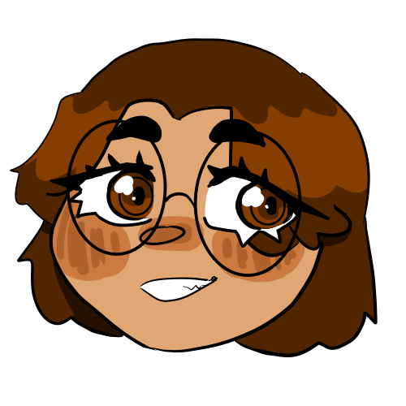
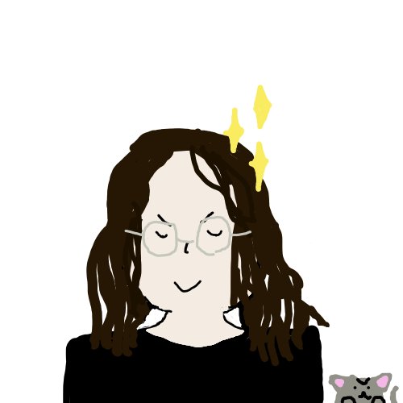
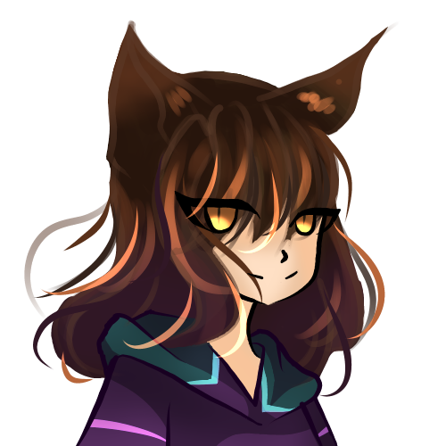

About..
The Website
This is a none-profit Website, created by three students of the HTL Leonding. We chose to make this Website, because we wanted to make something creative and new. In this game we wanted to create our own
characters and story. At first, we had to think of a good, interesting story. We also had to make different paths for the story
to take, which was hard, because every path has to get a fitting ending. Still it was much fun to create the story and an interesting
experience.
Us
|  |
Mia Marčeta <(‾︶‾)>
Hey!
I am Mia Marčeta, almost sixteen years old and a student of the HTL Leonding B).
When I am older, I want to make a lot of money. My task is to correct spelling mistakes.
I also did a lot of the artwork, such as Vita or the map. Some of my hobbies include drawing, playing
Cookie Run: Ovenbreak and watching cartoons.
You have any questions? Then feel free to contact Lisa.
|
|  |
Lisa Pichler 〜(^∇^〜）
Hey there!
My name is Lisa Pichler, and I am a fifteen-year old student of the HTL Leonding in Austria.
In the future I want to work in the IT industry and become successful. In this Project my part is to lead
the group and create the story. In my free time I like to play games, listen to music and watch anime. If you
have any questions regarding the website, contact me under pichlerlisa434@gmail.com.
|
|  |
Emma Walchshofer ☆＼(^ω^＼)
Huhu~ !
I'm Emma Walchshofer, a student from HTL-Leonding. In the future I want to work in the
IT industry and have a lot of cats. In my free time you often find me drawing, reading some mangas or
watching anime. In this project I did some art (I drew Steak) and wrote the History of Visual Novels
Site.
If you have any questions, please contact our team-leader Lisa Pichler!
Hope you have fun with our game!
|